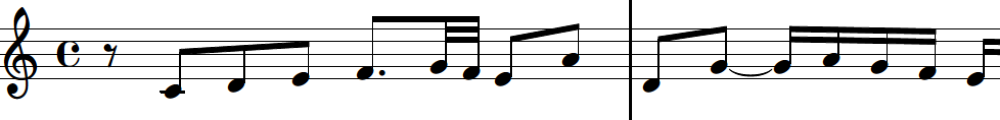

Die erste Fuge aus dem des Wohltemperierten Klavier ist eine wunderschöne Einführung in die Welt von Johann Sebastian Bach. Eine Fuge ist eine musikalische Komposition, in der ein Thema (eine Melodie) erst eingeführt und dann in anderen Stimmen wiederholt wird. Im Gegensatz dazu bestehen moderne Musikstücke aus nur einer Melodie, begleitet von Akkorden und Rhythmen. Das Thema sieht folgendermaßen aus:

Im ersten Teil der Fuge spielen alle vier Stimmen das Thema, jedoch zeitlich versetzt und nicht zur selben Zeit. Dann beginnen die Stimmen, das Thema so zu spielen, dass es mit dem der anderen Stimmen überlappt. Dies nennt man Stretto. Bach setzt das Stretto ein, um die Musik intensiver und komplexer zu gestalten.
Das Thema taucht 24 Mal im Laufe der Fuge auf. Dies ist kein Zufall: Es gibt 24 Fugen im Wohltemperierten Klavier - es ist also symbolisch zu verstehen! Bach liebte Zahlen und Symmetrien, und dies ist seine Art, zu zeigen, dass er von Anfang an insgesamt 24 Fugen schreiben wollte. Versuchen Sie doch, die einzelnen Themeneinsätze in der Fuge herauszuhören, während Sie der Darbietung von Kimiko Ishizaka lauschen.